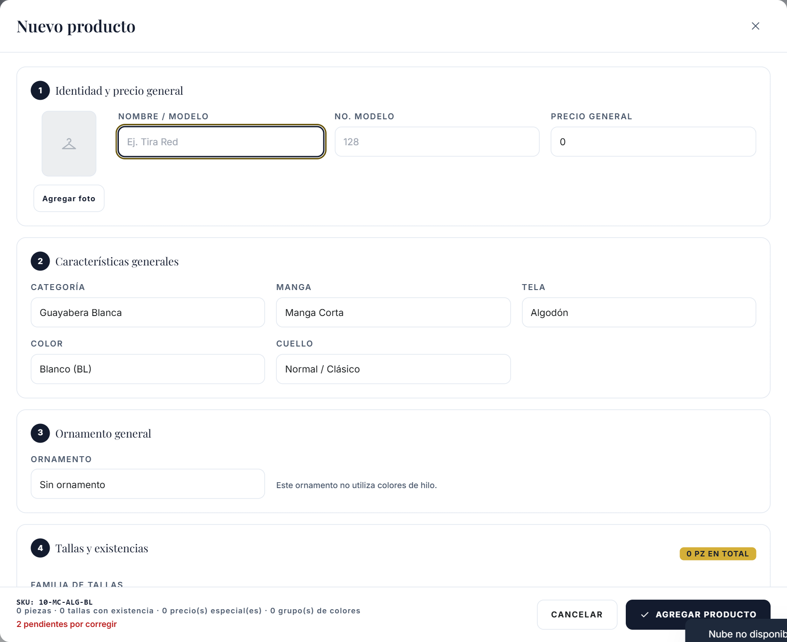
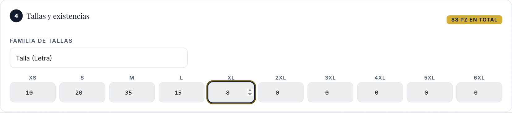
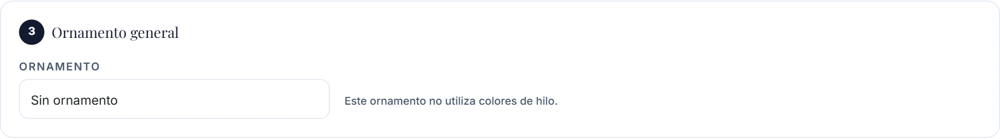
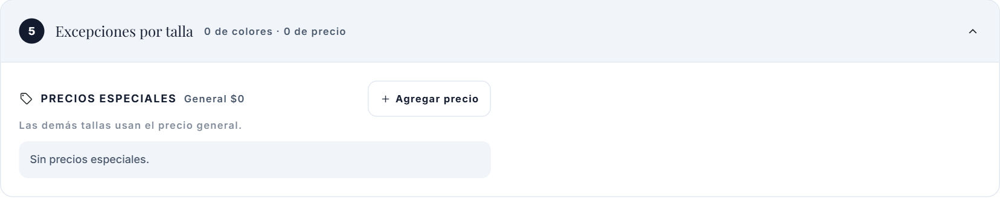
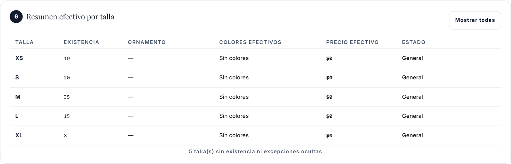
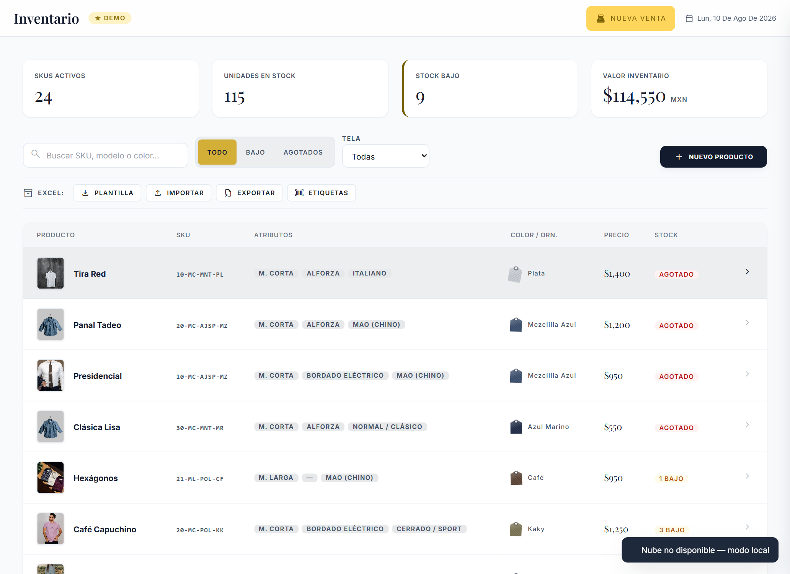
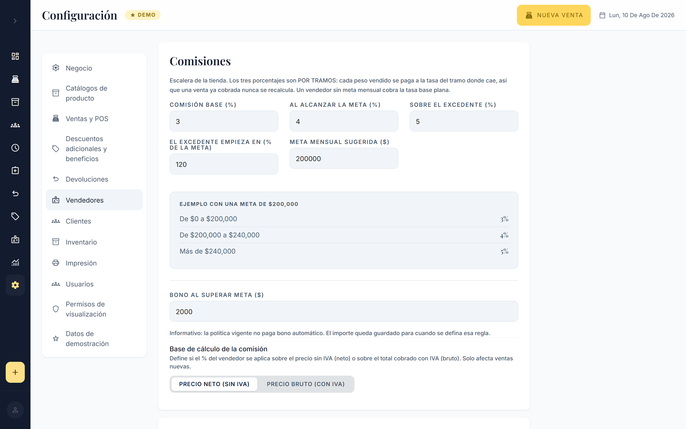
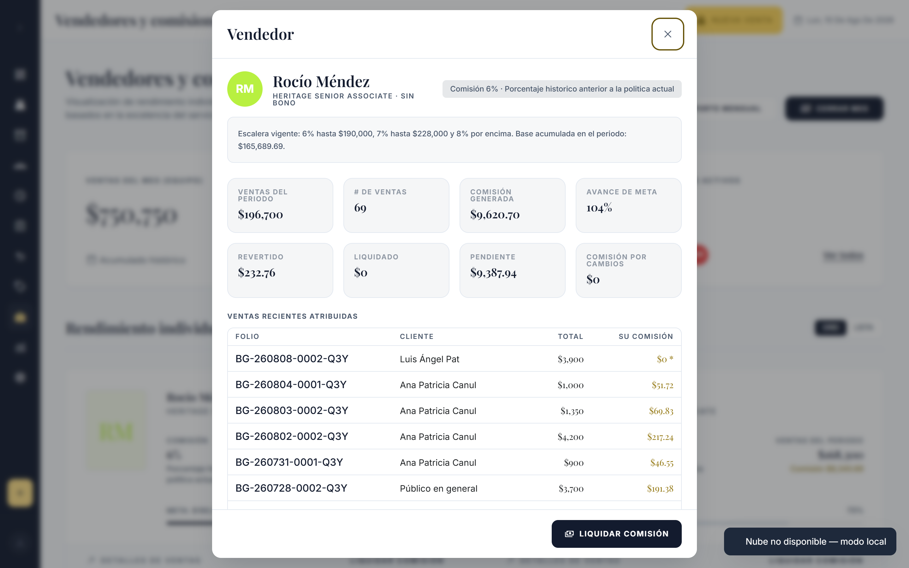
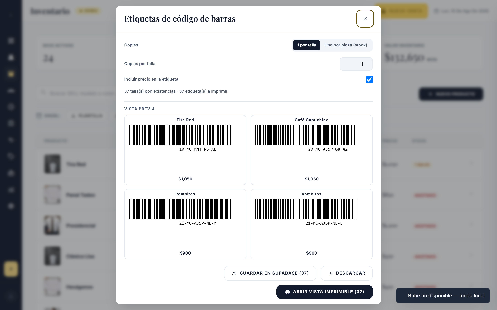

Manual de procedimientos Inventario, productos, códigos de barras y comisiones
Guía práctica para vendedores, encargados, administradores y personal de inventario.
Versión 2.0 10 de agosto de 2026Sistema POS BALAM publicadoUso Capacitación y consulta
Control del documento
Cómo usar este manual
Este manual conserva la identidad editorial del Manual de operación de POS Balam. Describe solamente funciones comprobadas en el sistema publicado. Los ejemplos usan datos ficticios.
AtenciónLas opciones administrativas pueden no aparecer en un perfil de vendedor. No compartas contraseñas ni uses archivos reales para practicar.
Consulta prendas, talla, precio efectivo y su comisión.
Encargado
Revisa capturas, etiquetas, importaciones y reportes.
Administrador
Da de alta productos, configura comisiones, metas, niveles y usuarios.
Inventario
Captura existencias, verifica códigos e imprime etiquetas.
Capítulo 1
Cómo registrar un nuevo producto
Objetivo
Crear un solo producto con todas sus tallas, existencias, precios y ornamentos.
Qué necesitas
Modelo confirmado, características, familia de tallas, conteo físico, precio general y foto opcional.
Resultado
El producto aparece en Inventario y queda disponible para el POS según sus existencias.
Entra a Inventario y pulsa Nuevo producto.
En Identidad y precio general, elige Nombre/Modelo, revisa el No. Modelo y captura el precio general.
En Características generales, selecciona Categoría, Manga, Tela/Material, Color, Cuello, Corte y demás catálogos vigentes.
Selecciona el Ornamento general y, cuando el ornamento lo permita, sus colores generales.
Elige una sola Familia de tallas y captura las piezas.
Abre Excepciones por talla sólo si alguna talla cambia de colores o precio.
Revisa Resumen efectivo por talla. Corrige todo aviso.
Pulsa Agregar producto. En edición también existe Guardar y abrir etiquetas.

Figura 1. Formulario vigente de Nuevo producto, organizado en seis secciones.
Qué significa cada campo
Campo
Tipo
Regla práctica
Nombre / Modelo y No. Modelo
General y obligatorio
Identifican comercialmente la prenda. Si el modelo viene de catálogo, el número se completa solo.
Precio general
General
Lo heredan todas las tallas sin precio especial.
Categoría, manga, tela, color, cuello, corte
Generales
Describen el producto y alimentan el Constructor de SKU según la configuración.
Imagen
Opcional
Ayuda a reconocer la prenda; no sustituye nombre ni SKU.
Familia de tallas
Obligatoria
Define si se muestran letras, números u otra escala configurada.
Existencias, precio especial y colores especiales
Por talla
Pueden ser diferentes dentro del mismo producto.
No hagas estoNo crees un producto separado por XS, S, M, L y XL. Captura todas las tallas en el mismo formulario. No cambies la familia después de capturar sin leer la confirmación: puede eliminar existencias o excepciones del borrador.
Capítulo 2
Existencias por talla
Objetivo
Registrar un lote completo sin repetir el producto.
Ejemplo
XS 10 · S 20 · M 35 · L 15 · XL 8 = 88 piezas.
Selecciona la familia correcta y escribe la cantidad debajo de cada talla. Una talla en cero permanece disponible en la familia, pero no suma al total ni se ofrece como pieza vendible. BALAM redondea la captura a piezas enteras y no admite negativos.

Figura 2. Cuadrícula masiva; el total se actualiza en el encabezado.
Talla letra y talla número
La familia de letras puede mostrar XS, S, M, L y XL; la numérica puede mostrar 38, 40, 42, etc. Elige la que corresponde físicamente a la prenda. No uses una familia sólo porque “se parece”.
Resultado esperadoEl total coincide con el conteo físico y el resumen muestra una fila por talla con existencia o excepción.
Ornamentos y colores generales
El ornamento es el acabado de la prenda, por ejemplo bordado, alforza o sin ornamento. Algunos ornamentos admiten colores de hilo y otros no. Cuando aparecen colores, selecciona uno o varios códigos visibles. Para corregir, vuelve a pulsar el color; para cambiar el ornamento, elige otra opción y revisa nuevamente los colores.

Figura 3. Ornamento general. Todas las tallas heredan estos colores salvo excepción.
Ejemplo
Guayabera “Alonso”, bordado, colores generales Dorado + Café. Si no existen excepciones, XS a XL usan ambos colores.
Capítulo 3 · H83
Colores de ornamento por talla
Usa colores generales cuando todas las tallas llevan el mismo acabado. Usa grupos especiales cuando un conjunto de tallas cambia.
Configura primero el ornamento y sus colores generales.
Abre Excepciones por talla y agrega un grupo de colores.
Marca varias tallas, por ejemplo XS, S y M.
Abre el selector y marca Dorado y Café. Pulsa Listo.
Agrega otro grupo para L y XL y selecciona Plateado.
Revisa el resumen: las tallas sin grupo heredan los colores generales.

Figura 4. Los grupos son una superficie de edición; no son productos separados.
Correcto
Incorrecto
XS/S/M → Dorado + Café; L/XL → Plateado.
M aparece en dos grupos con conjuntos distintos.
2XL sin excepción → hereda colores generales.
Crear un grupo con tallas pero sin elegir colores.
Por qué BALAM bloqueaUna talla no puede tener dos respuestas incompatibles. Corrige o elimina uno de los grupos; el sistema no aplica “el último gana”.
Precios especiales por talla
El precio general sigue siendo la base. Crea excepciones únicamente para tallas cuyo precio normal sea diferente.
Tallas
Precio
Resultado
XS, S, M
General $1,150
Heredan $1,150.
L, XL
Especial $1,250
Venden y etiquetan a $1,250.
2XL, 3XL
Especial $1,350
Venden y etiquetan a $1,350.
Para editar, abre el grupo, cambia precio o tallas y pulsa Listo. Para eliminarlo, usa el botón de papelera. Una talla no puede pertenecer a dos precios especiales.
Resumen efectivo por talla

Figura 5. Matriz de sólo lectura para revisar piezas, ornamento, colores y precio efectivo.
ImportanteLa matriz no es una segunda zona de captura. Si algo está mal, vuelve a Existencias, Ornamento o Excepciones. Mostrar todas incluye tallas en cero.
Capítulo 4
¿Qué es el SKU?
El SKU es el código comercial corto con el que BALAM reconoce un modelo. El Constructor combina las características configuradas —por ejemplo Categoría + Modelo + Manga + Color + marcador de Talla— y muestra una vista previa al pie del formulario.
Ejemplo conceptual: 1-ALS-MC-AMAR-T. Al crear una etiqueta de talla 42, el código de la pieza queda 1-ALS-MC-AMAR-42. Los códigos usan abreviaturas comprensibles, no identificadores técnicos.
¿Puede haber dos productos parecidos?
Sí. Nombre, tela, color, ornamento, precio u otros atributos pueden distinguirlos.
¿Por qué BALAM no utiliza solamente el nombre?
Porque nombres repetidos o editados no son una identidad confiable.
¿Qué pasa si cambia solamente la talla?
Sigue siendo el mismo producto; la talla forma la variante y el código de la etiqueta.
¿Qué pasa si cambia el precio o el color del ornamento?
Actualmente se maneja como excepción dentro del producto cuando corresponde. No existe una matriz comercial publicada que cree automáticamente `-01/-02/-03`.
¿Por qué no debo modificar el SKU sin procedimiento?
Etiquetas anteriores podrían dejar de coincidir con la prenda esperada.
¿Por qué hay identificadores internos que no vemos?
BALAM usa internamente una identidad única para saber exactamente qué producto modifica, aunque dos códigos comerciales puedan parecerse. No se imprime porque no ayuda a reconocer la prenda.
¿Qué hago con defecto, remate o devolución?
No inventes otro SKU. Sigue la política de descuento, devolución o cambio vigente; consulta a administración si se requiere un producto comercial distinto.
Función no disponibleLos sufijos automáticos `-01`, `-02` y `-03` no están implementados ni publicados. Este manual no enseña a utilizarlos.
Prevención de duplicidades
Históricamente, usar sólo el SKU para actualizar podía mezclar filas parecidas. El contrato Excel H86 actualiza por la identidad interna incluida por BALAM. Un alta sin identidad sólo procede si su SKU no existe; SKU existente o repetido se muestra como conflicto y la importación queda bloqueada. Es mejor detenerse que mezclar mercancía incorrecta.
Capítulo 5 · H88B
Códigos de barras y etiquetas
En Inventario, filtra los productos deseados y pulsa Etiquetas; o abre un producto y elige Imprimir etiqueta.
Selecciona las tallas y la cantidad de etiquetas.
Comprueba nombre, talla, código y precio. BALAM usa el precio efectivo de esa talla.
Pulsa Abrir vista imprimible. Desde ella puedes Imprimir, Descargar y, cuando el dispositivo lo admite, Compartir.
Imprime una muestra y léela con el lector antes de producir el lote.
La etiqueta mide 60×40 mm. El código Code128 identifica la combinación que BALAM espera al comparar el código completo contra cada producto y talla vendible.
Seguridad y preguntas frecuentes
¿Por qué dos tallas no deben confundirse?
La talla real forma parte del código de cada etiqueta.
¿Qué sucede si el SKU es largo?
Las barras deben comprimirse. BALAM advierte cuando el módulo estimado queda por debajo de 0.25 mm.
¿Qué hago si aparece la advertencia?
Acorta el SKU mediante el procedimiento administrativo y valida una muestra física antes del lote.
¿Por qué debo probar físicamente?
BALAM valida generación y dimensiones; la lectura también depende de impresora, calidad, escala, papel, lector y configuración.
¿Qué sucede si cambio el precio?
El código identifica la prenda, no congela el precio impreso. Imprime una etiqueta nueva si el precio visible debe cambiar; retira la anterior según la política de tienda.
¿Qué hago si el lector no reconoce el código?
No captures otra talla para “hacerla pasar”. Revisa escala 100 %, limpieza, contraste, papel y lector; prueba reimprimir una muestra.
No se promete lectura infalibleUn archivo generado correctamente puede fallar físicamente por hardware o calibración.
Capítulo 6 · H86
Plantilla, Exportar e Importar

Figura 6. Acciones vigentes en Inventario.
Acción
Significado
Plantilla
Formato oficial vacío para preparar altas.
Exportar
El mismo formato con los productos actuales y su identidad protegida.
Importar
Lee ese contrato, presenta una vista previa y aplica sólo si no hay conflictos.
Haz respaldo con Exportar.
Trabaja sobre Plantilla o Exportar; no construyas un Excel improvisado.
No borres la hoja oculta ni cambies la versión.
Importa y revisa altas, actualizaciones, existencias, precios y conflictos.
Si aparece un conflicto, corrige el archivo. La confirmación seguirá deshabilitada.
Para una carga masiva, prueba primero con pocas filas y vuelve a exportar para comprobar.
¿Por qué mi archivo fue bloqueado?
Puede faltar una columna, repetirse una talla, existir JSON inválido, catálogo desconocido, versión incompatible o SKU ambiguo.
¿Por qué BALAM no eligió automáticamente el mismo SKU?
Dos productos distintos pueden compartir o haber compartido un código parecido. Elegir sin evidencia puede fusionar mercancía.
¿Qué es un archivo heredado?
Un Excel anterior al contrato vigente. BALAM lo identifica y advierte; si no puede resolverlo sin ambigüedad, lo bloquea.
Capítulo 7 · H69
Cómo funcionan las comisiones
Objetivo
Entender cuánto genera una venta y cómo avanzan meta y niveles.
Política publicada
3 % base; 4 % desde la meta; 5 % por encima de 120 % de la meta.
Base
Venta neta sin IVA y después de descuentos.
Tramos marginalesSólo los pesos que caen en un tramo usan su tasa. Alcanzar la meta no recalcula ventas anteriores.
Ejemplos
Caso
Cálculo
Comisión
Sin meta; neto $1,000
$1,000 × 3 %
$30
Meta $20,000; primeros $20,000
$20,000 × 3 %
$600
De $20,000 a $24,000
$4,000 × 4 %
$160
Venta acumulada hasta $30,000
$20,000×3 % + $4,000×4 % + $6,000×5 %
$1,060
Si una venta cruza varios límites, BALAM la divide en tramos. Con meta $10,000 y avance previo $8,000, una base nueva de $5,000 paga: $2,000×3 % + $2,000×4 % + $1,000×5 % = $190.
Qué cuenta
Operación
Tratamiento publicado
Venta normal
Comisiona sobre neto sin IVA.
Descuento
Reduce la base; se calcula después del descuento.
Cortesía
No genera comisión.
Apartado
No comisiona al abrirse; comisiona al liquidarse.
Cambio
Sólo la diferencia positiva neta comisiona; una diferencia negativa no.
Devolución
Revierte exactamente la comisión congelada de las piezas devueltas.
Dos vendedores
La base se reparte; cada vendedor cobra su tasa sobre su parte.
Capítulo 8
Nivel, meta y porcentaje efectivo
En Configuración → Usuarios, administración puede asignar porcentaje personalizado, nivel y meta mensual. La prioridad vigente es: porcentaje personalizado; si no existe, porcentaje del nivel; si no, porcentaje general de la tienda. Un 0 % capturado expresamente sí cuenta.

Figura 7. Configuración publicada de tasas, umbral, meta sugerida y base neta.
La meta sugerida rellena las altas nuevas; cada ficha puede tener su propia meta. El campo Bono es informativo: no existe pago automático de bono.
¿Cómo subo de nivel?
El nivel no cambia automáticamente por vender cierta cantidad. Administración lo asigna conforme a la política interna. Al cambiarlo, la ficha muestra el porcentaje efectivo y su origen. Un porcentaje personalizado desplaza toda la escalera conservando los saltos entre tramos.
Dónde revisar
La pantalla Vendedores muestra avance, venta acumulada, porcentaje y comisión pendiente. El detalle explica la escalera vigente. Reportes y el archivo mensual consumen el mismo registro de comisión; al cerrar el periodo se liquida lo pendiente sin borrar el historial generado.

Figura 8. Vista de vendedores y comisiones con datos de demostración.
FAQ
¿Cuándo gano comisión?
Al cobrarse una venta o al liquidarse un apartado; el cambio sólo por diferencia positiva.
¿El IVA genera comisión?
No.
¿Todas mis ventas anteriores suben al 4 %?
No. Los tramos son marginales y lo ya cobrado queda congelado.
¿Qué significa superar 120 %?
Con meta $20,000, el tramo 5 % empieza después de $24,000.
¿Puedo tener porcentaje personalizado?
Sí, si administración lo autoriza y captura en tu ficha.
¿Dónde veo cuánto llevo?
En Vendedores y en los reportes del periodo.
Consulta rápida
Errores frecuentes y glosario
Si ocurre…
Haz esto
La talla correcta no aparece
Revisa la familia de tallas y no uses otra por aproximación.
El resumen muestra pendiente
Pulsa el aviso; BALAM lleva el foco al campo responsable.
Una talla está en dos grupos
Retírala de uno. No intentes guardar hasta resolver.
Excel bloqueado
No fuerces ni copies sólo valores; corrige el conflicto indicado.
Etiqueta ilegible
Detén el lote, prueba escala 100 %, papel, impresora y lector.
Comisión no coincide
Revisa periodo, vendedor, neto sin IVA, descuento, devolución y liquidación.
Precio efectivo
Precio general o excepción correspondiente a esa talla.
Colores efectivos
Colores especiales de la talla; si no existen, colores generales.
SKU
Código comercial reconocible del modelo.
Código de barras
Representación Code128 del código de producto y talla.
Identidad interna
Dato invisible que evita modificar el producto equivocado.
Tramo marginal
Parte de la base que usa una tasa, sin recalcular lo anterior.
Meta
Base mensual que habilita el siguiente tramo.
Resultado esperadoAntes de guardar o imprimir, la persona puede explicar qué producto, talla, colores, precio y comisión resultarán.
Fin del manual · Estado documental: funciones contrastadas con el build y la evidencia publicada al 10/08/2026.
Apéndice visual
Controles de etiquetas

Selector vigente de productos, tallas y cantidades de etiquetas, capturado sobre el build actual con datos de demostración.
RecuerdaRevisa talla, cantidad, precio efectivo y advertencias antes de abrir la vista imprimible.